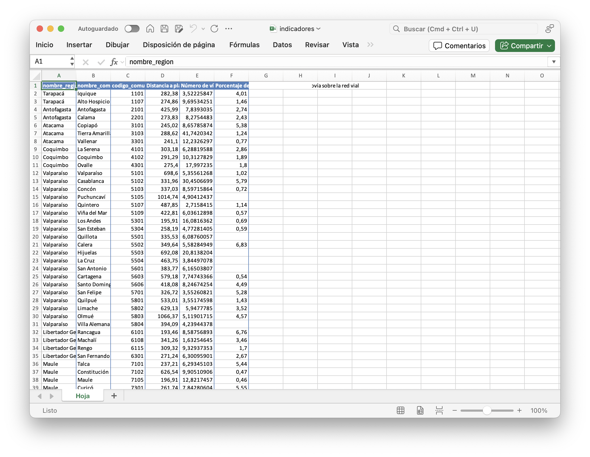
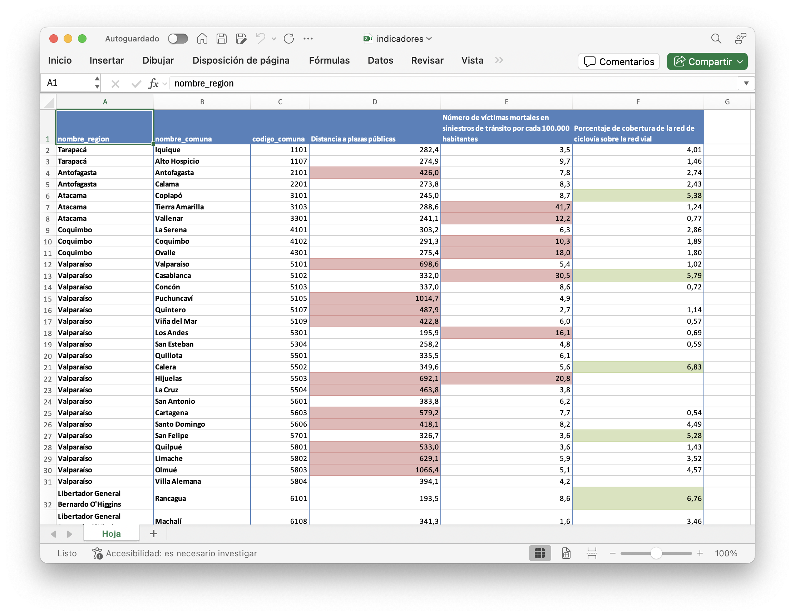

Crea planillas de Excel con formato personalizado desde R con {openxlsx}
8/8/2025
Al terminar el procesamiento o limpieza de un conjunto de datos, usualmente necesitamos entregar la base en un formato más amigable para otros colegas o usuarios/as, lo que significa: Excel. Exportar datos de R a Excel es fácil: con la función writexl::write_xlsx() podemos guardar cualquier dataframe en Excel. Pero esta función hace sólo eso, y el archivo resultante es básico y hasta feo.
Sin embargo, existe el
paquete {openxlsx}, que además de leer y escribir archivos Excel, nos entrega funciones para generar archivos Excel desde R que contengan todo tipo de formato, estilo de tablas, y manipulación celda por celda del archivo resultante, con lo que podemos generar planillas de Excel atractivas desde R.
La gracia es que podremos usar estas herramientas de forma reproducible (poder re-hacer gratis la planilla con datos actualizados o corregidos), y también podremos combinar la programación de R para crear estilos condicionales, crear cientos de archivos Excel, o planillas de cientos de hojas, y mucho más.
Carguemos un conjunto de datos de indicadores de calidad de vida urbana de Chile, del Sistema de Indicadores y Estándares de Desarrollo Urbano.
library(arrow)
datos <- read_parquet("https://github.com/bastianolea/siedu_indicadores_urbanos/raw/main/datos/siedu_indicadores_desarrollo_urbano.parquet")
datos
# A tibble: 6,701 × 12
codigo_comuna codigo_region codigo_provincia nombre_region nombre_provincia
<dbl> <chr> <chr> <chr> <chr>
1 1107 01 011 Tarapacá Iquique
2 1107 01 011 Tarapacá Iquique
3 1107 01 011 Tarapacá Iquique
4 1107 01 011 Tarapacá Iquique
5 1107 01 011 Tarapacá Iquique
6 1107 01 011 Tarapacá Iquique
7 1107 01 011 Tarapacá Iquique
8 1107 01 011 Tarapacá Iquique
9 1107 01 011 Tarapacá Iquique
10 1107 01 011 Tarapacá Iquique
# ℹ 6,691 more rows
# ℹ 7 more variables: nombre_comuna <chr>, id <chr>, año <dbl>, variable <chr>,
# valor <dbl>, medida <chr>, estandar <chr>
Filtremos los datos para dejar tres indicadores, y sólo los valores más recientes para cada unidad territorial.
library(dplyr)
datos <- datos |>
# filtrar variables
filter(variable %in% c("Distancia a plazas públicas",
"Número de víctimas mortales en siniestros de tránsito por cada 100.000 habitantes",
"Porcentaje de cobertura de la red de ciclovía sobre la red vial")) |>
# dejar sólo valores más recientes por comuna
group_by(nombre_region, nombre_comuna, variable) |>
filter(año == max(año)) |>
ungroup()
datos |> select(-starts_with("codigo"))
# A tibble: 340 × 9
nombre_region nombre_provincia nombre_comuna id año variable valor
<chr> <chr> <chr> <chr> <dbl> <chr> <dbl>
1 Tarapacá Iquique Alto Hospicio BPU_… 2018 Distanc… 275.
2 Tarapacá Iquique Alto Hospicio DE_28 2021 Número … 9.70
3 Tarapacá Iquique Alto Hospicio EA_93 2021 Porcent… 1.46
4 La Araucanía Malleco Angol BPU_… 2018 Distanc… 342.
5 La Araucanía Malleco Angol DE_28 2021 Número … 12.4
6 La Araucanía Malleco Angol EA_93 2021 Porcent… 4.59
7 Antofagasta Antofagasta Antofagasta BPU_… 2018 Distanc… 426.
8 Antofagasta Antofagasta Antofagasta DE_28 2021 Número … 7.84
9 Antofagasta Antofagasta Antofagasta EA_93 2021 Porcent… 2.74
10 Arica y Parinacota Arica Arica BPU_… 2018 Distanc… 324.
# ℹ 330 more rows
# ℹ 2 more variables: medida <chr>, estandar <chr>
Ahora pivotemos los datos para crear una típica tabla de Excel donde los indicadores estén en columnas hacia el lado, mientras que hacia abajo están las unidades u observaciones; en este caso, comunas.
library(tidyr)
datos <- datos |>
select(nombre_region, nombre_comuna, codigo_comuna, variable, valor) |>
pivot_wider(names_from = variable, values_from = valor) |>
arrange(codigo_comuna)
datos |> select(-starts_with("codigo"))
# A tibble: 117 × 5
nombre_region nombre_comuna Distancia a plazas púb…¹ Número de víctimas m…²
<chr> <chr> <dbl> <dbl>
1 Tarapacá Iquique 282. 3.52
2 Tarapacá Alto Hospicio 275. 9.70
3 Antofagasta Antofagasta 426. 7.84
4 Antofagasta Calama 274. 8.28
5 Atacama Copiapó 245. 8.66
6 Atacama Tierra Amarilla 289. 41.7
7 Atacama Vallenar 241. 12.2
8 Coquimbo La Serena 303. 6.29
9 Coquimbo Coquimbo 291. 10.3
10 Coquimbo Ovalle 275. 18.0
# ℹ 107 more rows
# ℹ abbreviated names: ¹`Distancia a plazas públicas`,
# ²`Número de víctimas mortales en siniestros de tránsito por cada 100.000 habitantes`
# ℹ 1 more variable:
# `Porcentaje de cobertura de la red de ciclovía sobre la red vial` <dbl>
Si guardamos este archivo con {writexl}, obtenemos una planilla básica de Excel:
library(writexl)
write_xlsx(datos, "indicadores.xlsx")
Este resultado puede ser suficiente para algo rápido, pero definitivamente no es algo presentable ni atractivo.
Crear planillas Excel personalizadas con {openxlsx}
El primer paso para crear nuestro Excel es crear la planilla con la función createWorkbook(). Esta función se asigna a un objeto que representará a nuestra planilla.
library(openxlsx)
tabla <- createWorkbook()
Iremos aplicando distintas funciones de {openxlsx} sobre este objeto tabla para ir modificando la planilla Excel resultante.
Con nuestra planilla creada, tenemos que crear una hoja de Excel para que podamos ponerle datos a la planilla.
addWorksheet(tabla, "Hoja")
Podemos usar esta función una o varias veces para crear una o varias hojas en nuestra planilla.
Guardar la planilla Excel
En cualquier momento del proceso puedes guardar la planilla como archivo Excel para previsualizar como está quedando tu tabla, aunque en este paso del tutorial nuestra planilla está vacía.
# guardar
saveWorkbook(tabla,
"indicadores.xlsx",
overwrite = TRUE)
Escribir datos en la hoja de Excel
Ahora tenemos que rellenar la planilla con datos con la función writeDataTable(), a la que hay que especificarle primero la planilla que vamos a editar (tabla), y la hoja ("Hoja") en que queremos escribir los datos. En el argumento x entregamos el dataframe que queremos escribir en la hoja de la planilla.
# tabla con formato personalizado
writeDataTable(tabla, "Hoja",
x = datos, # la tabla que queremos escribir en el Excel
tableStyle = "TableStyleLight9", # estilo de la tabla
startRow = 1, startCol = 1,
colNames = TRUE,
bandedCols = TRUE,
bandedRows = FALSE,
withFilter = FALSE,
# keepNA = TRUE,
# na.string = "sin datos"
)
Esta función tiene varios argumentos que permiten personalizar la planilla. El más relevante es tableStyle, con el que le damos uno de los temas de Excel a la tabla. Podemos encontrar los temas de Excel en el botón Dar formato como tabla del panel Inicio de Excel.
En este panel, si pones el cursor sobre los íconos puedes ver que cada estilo tiene un número (9 es una tabla azul con fila de encabezado, 13 es la misma pero morada, 5 es una tabla celeste con encabezado sin relleno, etc.), y una intensidad (claro, medio y oscuro)
Así va quedando nuestra planilla!
Modificar ancho de columnas
Si tenemos columnas que requieren más ancho, podemos definirlo con setColWidths(). En esta y otras funciones de {openxlsx}, en el argumento cols le decimos qué columnas queremos afectar, y luego le decimos el valor que queremos darle a cada columna correspondiente.
# ancho de columnas
setColWidths(tabla, "Hoja",
cols = c(1, 2, 3,
4, 5, 6),
widths = c(22, 22, 13,
30, 30, 30)
)
En este ejemplo, afectamos las 6 columnas: a las 1 y 2 le damos 22 de ancho, luego a la 3 le damos 13, y a las tres finales (columnas con los indicadores) les damos un mayor ancho de 30.
Si el texto aún no cabe en las celdas, podemos definir un estilo a las celdas para que el texto se corte y aumente el alto de las celdas con mucho texto. Para definir un estilo usamos addStyle() y le damos un estilo que se hace con createStyle(). Luego, se define las filas (rows) y columnas (cols) que recibirán este estilo.
# flujo de texto
addStyle(tabla, "Hoja",
style = createStyle(wrapText = TRUE),
rows = 1:nrow(datos)+1,
cols = c(1, 4, 5, 6),
stack = TRUE, gridExpand = T)
En este caso le puse que las filas a las que se aplica el estilo sean todas las filas del dataframe (nrow(datos)) más 1, porque recordemos que en Excel la fila de los nombres de columna cuenta como una fila. Por eso el estilo se aplica desde la fila 1 a la nrow(datos)+1.
Definir estilo de texto
Ahora quiero que las primeras dos columnas vayan en negrita. Hacemos lo mismo que en el paso anterior, pero ahora creamos un estilo distinto con createStyle():
# celdas en negrita
addStyle(tabla, "Hoja",
style = createStyle(textDecoration = "BOLD"),
rows = 1:nrow(datos)+1,
cols = c(1, 2),
stack = TRUE, gridExpand = T)
Es importante definir los argumentos stack = TRUE, gridExpand = T para que los estilos se sumen en vez de reemplazarse.
Notamos que, cuando el texto de las celdas fluye para usar múltiples líneas, los valores quedan alineados verticalmente hacia abajo, y se ven feos, así que los alinearemos verticalmente en el centro:
# centrado vertical
addStyle(tabla, "Hoja",
style = createStyle(valign = "center"),
rows = 1:nrow(datos)+1,
cols = 1:length(datos),
stack = TRUE, gridExpand = T)
Nótese que aplicamos este estilo a todas las filas (1:nrow(datos)+1) y a todas las columnas 1:length(datos).
Formatear variables numéricas
Los números con decimales pueden ser ajustados definiendo el estilo createStyle(numFmt = "0.00") o similar, donde el texto representa la cantidad de decimales que queremos mostrar:
# decimales
addStyle(tabla, "Hoja",
style = createStyle(numFmt = "0.00"),
rows = 1:nrow(datos)+1, cols = c(6),
stack = TRUE, gridExpand = TRUE)
addStyle(tabla, "Hoja",
style = createStyle(numFmt = "0.0"),
rows = 1:nrow(datos)+1, cols = c(4, 5),
stack = TRUE, gridExpand = TRUE)
Estilo condicional de celdas de acuerdo a los valores de los datos
Como hemos visto hasta ahora, todos los estilos se aplican definiendo la posición de las filas y columnas que queremos modificar. Por ejemplo, si queremos modificar la cuarta fila de la segunda columna, sería rows = 4, cols = 2.
Podemos aprovechar esta lógica para aplicar estilos que dependan del valor de los datos.
Por ejemplo, si tenemos un vector de datos:
datos[[4]]
[1] 282.38 274.86 425.99 273.83 245.02 288.62 241.10 303.18 291.29
[10] 275.40 698.60 331.96 337.03 1014.74 487.85 422.81 195.91 258.19
[19] 335.53 349.64 692.08 463.75 383.77 579.18 418.08 326.72 533.01
[28] 629.13 1066.37 394.09 193.46 341.26 309.32 271.24 237.21 626.54
[37] 196.91 261.74 243.70 277.05 250.93 334.88 260.42 298.01 397.34
[46] 630.78 278.38 250.96 269.13 361.94 842.69 174.37 268.58 241.55
[55] 249.80 242.14 405.63 342.34 269.90 211.65 459.62 203.42 223.62
[64] 302.26 355.57 241.34 207.37 198.72 260.57 271.98 264.33 325.99
[73] 379.62 206.06 218.95 196.25 442.02 330.57 475.15 213.77 197.15
[82] 238.16 170.11 349.66 260.62 219.73 345.05 185.01 206.69 344.91
[91] 260.17 216.00 252.60 429.94 224.27 444.36 187.97 692.96 708.93
[100] 263.33 302.88 519.54 220.60 303.81 489.65 327.53 335.11 196.11
[109] 385.91 468.69 255.61 313.70 385.68 323.99 232.25 313.80 288.51
Podemos evaluar una comparación para ver qué valores cumplen o no; en este caso, qué valores son superiores a 400:
datos[[4]] > 400
[1] FALSE FALSE TRUE FALSE FALSE FALSE FALSE FALSE FALSE FALSE TRUE FALSE
[13] FALSE TRUE TRUE TRUE FALSE FALSE FALSE FALSE TRUE TRUE FALSE TRUE
[25] TRUE FALSE TRUE TRUE TRUE FALSE FALSE FALSE FALSE FALSE FALSE TRUE
[37] FALSE FALSE FALSE FALSE FALSE FALSE FALSE FALSE FALSE TRUE FALSE FALSE
[49] FALSE FALSE TRUE FALSE FALSE FALSE FALSE FALSE TRUE FALSE FALSE FALSE
[61] TRUE FALSE FALSE FALSE FALSE FALSE FALSE FALSE FALSE FALSE FALSE FALSE
[73] FALSE FALSE FALSE FALSE TRUE FALSE TRUE FALSE FALSE FALSE FALSE FALSE
[85] FALSE FALSE FALSE FALSE FALSE FALSE FALSE FALSE FALSE TRUE FALSE TRUE
[97] FALSE TRUE TRUE FALSE FALSE TRUE FALSE FALSE TRUE FALSE FALSE FALSE
[109] FALSE TRUE FALSE FALSE FALSE FALSE FALSE FALSE FALSE
Ahora que sabemos qué valores cumplen, con la función which() podemos obtener su posición:
which(datos[[4]] > 400)
[1] 3 11 14 15 16 21 22 24 25 27 28 29 36 46 51 57 61 77 79
[20] 94 96 98 99 102 105 110
Es decir, obtenemos un vector que dice en qué filas se cumple la condición. Teniendo esto, podemos crear formatos condicionales según los datos: creamos un estilo con createStyle() que defina un relleno, borde y color de borde, que se aplique solamente a las celdas donde se cumple la condición, pero sumándole 1 para saltarnos la primera fila (nombres de columnas en Excel).
# color condicional
addStyle(tabla, "Hoja",
# crear estilo de color de relleno
style = createStyle(fgFill = "#E6B8B7",
border = c("top", "bottom"),
borderColour = c("#DA9694", "#DA9694")),
# filas a las que se va a aplicar el estilo
rows = which(datos[[4]] > 400)+1, # celdas donde x es mayor a 400, + 1 para saltarse la primera fila
cols = 4,
stack = TRUE, gridExpand = T)
# otro estilo para otra columna
addStyle(tabla, "Hoja",
style = createStyle(fgFill = "#E6B8B7",
border = c("top", "bottom"),
borderColour = c("#DA9694", "#DA9694")),
rows = which(datos[[5]] > 10)+1,
cols = 5,
stack = TRUE, gridExpand = T)
# un tercer estilo con colores distintos
addStyle(tabla, "Hoja",
style = createStyle(fgFill = "#D7E4BC",
border = c("top", "bottom"),
borderColour = c("#C4D79B", "#C4D79B")),
rows = which(datos[[6]] > 5)+1,
cols = 6,
stack = TRUE, gridExpand = T)
En este ejemplo aplicamos tres estilos condicionales a tres columnas distintas, cada uno con un criterio personalizado para destacar celdas con valores que cumplen la condición apropiada.
Cuando estemos satisfechxs con nuestra planilla, la guardamos como Excel.
# guardar
saveWorkbook(tabla,
"indicadores.xlsx",
overwrite = TRUE)
Otros
Aquí voy a ir dejando otras funcionalidades útiles de {openxlsx}:
Definir el tamaño que tendrá la ventana al abrir la planilla
# tamaño de la ventana
setWindowSize(tabla,
yWindow = 12, xWindow = 12,
windowWidth = "20000",
windowHeight = "15000")
Cambiar la altura de las celdas:
# altura para celdas con texto
setRowHeights(tabla, "Hoja",
rows = c(6, 7, 12, 13),
heights = c(64, 64, 64))
Otros tutoriales:
- Creating Professional Excel Reports with R: A Comprehensive Guide to openxlsx Package
- Making pretty Excel files in R
- Fecha de publicación:
- August 8, 2025
- Extensión:
- 11 minute read, 2233 words